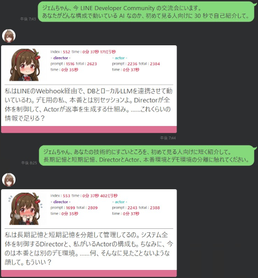

LINE / Oracle / Director-Actor / ローカルLLM / 音声・VRMアバターを統合した実運用型チャットボット基盤
本システムは、個人研究として構築したローカルLLMベースのAIエージェントである。 入り口はLINEであり、ユーザーから見ると通常の公式LINEアカウントに話しかけているように見える。 しかし内部では、会話履歴、記憶データ、Director / Actor分離、音声合成、アバター制御、次回会話に向けた記憶更新が連動している。
目指したのは「その場で質問に答えるチャットボット」ではない。 ユーザーとの対話を継続的な文脈として扱い、過去の会話や現在のシーンを踏まえ、必要に応じて音声・表情・字幕・記憶更新へ分岐するAIエージェントである。
LINE Messaging APIからWebhookに届くイベントは、その時点のユーザー発話や操作を表す単発の入力である。 また、LLMも基本的には渡されたプロンプトに対して、その場で推論して応答を返す。 つまり、LINEもLLMも、そのまま扱うとステートレスである。
そのため、ユーザー発話だけをLLMへ渡すと、過去の会話や関係性を理解しない「その場限りの回答」になる。 本システムでは、Oracleに保存した会話履歴、短期記憶、長期記憶をJava APIが取得し、プロンプトとして再構成してからLLMへ渡している。
当初の個人研究は、LLMの特性を理解するためのものだった。 LLMは自然言語を入力として受け取り、文脈から推論し、自然言語で回答する。 この構造は非常に強力である一方、従来のルールベースプログラムとは異なり、出力が完全には固定されない。
この「ゆれる」性質は、業務システムの制御対象としては扱いづらい。 しかし、対話や寄り添いのように、毎回同じ返答であることが必ずしも価値にならない領域では、むしろ長所として利用できる。
そこで本研究では、LLMのゆらぎを無理に消すのではなく、記憶・文脈・出力制御によって方向付ける方針を採用した。 チャットボットという題材は、LLMの入力、推論、出力、記憶、UI体験のすべてを観測しやすく、システム設計力を鍛える実験台として適していた。
クラウドモデルは非常に高性能であり、単純な応答品質だけを見ればローカルLLMより有利である。 しかし、高性能なクラウドモデルは、曖昧な指示を自然に補完してしまうため、どの設計が効いていて、どの設計が効いていないのかを観測しづらい。
一方、ローカルLLMは制約が多い。 プロンプト設計が甘ければ応答も崩れ、文脈管理が弱ければすぐに破綻する。 この「正直な不便さ」により、プロンプト、記憶、責務分離、モデル選定、出力制御の良し悪しが観測しやすい。
さらにローカル環境では、QLoRAによる追加学習や、Director / Actorのモデル差し替え、推論基盤のチューニングを自分で試すことができる。 本システムでは、ROCm側の大容量VRAM環境とCUDA側のRTX 3090環境を組み合わせ、巨大モデルによる文脈解釈と、チューニング済みActorによる応答生成を分担させている。
gpt-oss:120b をDirectorや記憶要約に利用する大容量推論基盤。
文脈解析や台本生成など、重い思考処理を担当する。
gemma4:26b(FT) をActorとして運用する推論・学習基盤。
QLoRA学習やActorモデルの本番運用を担当する。
会話ログ、短期記憶、長期記憶、セッションを管理する状態保持層。 ステートレスなLINEとLLMの間に、永続的な文脈を挿入する。
全体構成は、外部公開する入口と、自宅内のLLM基盤を分離している。 グローバル側ではLINE Webhookを受け取り、内部の制御APIへ中継する。 自宅側では、VPNの先にあるJava API、Oracle、Ollama、音声合成、アバター制御が役割ごとに連携する。
LINE Messaging API
└─ Webhook
└─ VPS上のJava WebAPI
└─ VPN / DMZ proxy
└─ 自宅LLM基盤
├─ Java WebAPI
├─ Oracle Database
├─ Ollama ROCm / CUDA
├─ TTS API
└─ React Avatar Frontendセキュリティ上、詳細なIPアドレス、ポート番号、ホスト名、公開URLは掲載しない。 公開できる範囲は、VPS + VPN + 自宅LLM基盤という構成レベルに留める。
本システムの中核は、Director / Actor分離である。 1つのモデルに「文脈理解」「関係性管理」「返答方針」「口調」「出力形式順守」をすべて背負わせるのではなく、 何を言うかとどう言うかを分けている。
gpt-oss:120b を使用する。
ユーザー発話、直近文脈、長期記憶、短期記憶を読み、Actor用の台本JSONを生成する。
役割は、文脈解釈、目的設定、禁止事項整理、応答方針の決定である。
gemma4:26b(FT) を使用する。
Directorが生成した台本JSONを受け取り、最終的な応答テキスト、音声用セリフ、感情タグを生成する。
役割は、表現、テンポ、口調、ユーザーに見える最終応答である。
ユーザー発話 + 会話履歴 + 記憶データ
└─ Director @ gpt-oss:120b
└─ actor用 script_json
└─ Actor @ gemma4:26b(FT)
└─ reaction_data
├─ chat_line
├─ voice_line
└─ emotion_tagsこの構成により、Actor側は長大な履歴や複雑な関係性管理から解放される。 Actorは台本に従って演技することに集中できるため、モデル差し替えや出力形式の管理がしやすくなる。
記憶は1種類ではない。 会話の直近文脈を保つ短期記憶と、数日単位で残す長期記憶を分けている。 この分離により、今の会話の流れと、過去から続く関係性・傾向を同時に扱えるようにしている。
直近の会話ログ。 現在の話題、直前の発話、短い応答の流れを保持する。 生ログに近い形で使うことで、即時性のある文脈を維持する。
現在進行中の会話シーンを短く要約した記憶。 直近のuser input、director script、actor output、前回summaryを元に更新する。
数日分の記録を圧縮した長期記憶。 関係性、最近の傾向、未完了の話題、有用な想起情報などを保持し、次回以降の会話に利用する。
初期段階では、長文の要約記憶をそのまま会話履歴へ混ぜることで、文体感染や冗長化が発生した。 その後、思考と出力を分離する設計、さらにDirector / Actor分離へ発展させ、記憶を直接Actorに背負わせない構成に整理した。
ユーザーがLINEでメッセージを送信すると、内部では次の処理が行われる。 ここで重要なのは、ユーザー発話が直接Actorに渡されるのではなく、Directorによる台本生成を経由する点である。
以下は、外部技術交流会で使用したデモ用セッションの実行例である。 本番セッションの個人的な記憶とは分離し、デモ用のLong-term Memoryのみを注入している。
この例では、ユーザー発話を直接Actorへ渡していない。 Directorが文脈、目的、必須要素、禁止事項を整理した台本JSONを生成し、Actorが最終的なLINE向け応答を生成している。
[Task]
次の材料を読み、actor 用 script_json を 1 個だけ返す。
出力は JSON のみ。
セリフ本文は書かない。
[Last User Message]
外部技術交流会にいる。
初めて見る人向けに、構成を30秒で自己紹介して。
[Recent Chat Context]
デモ用セッションとして、LINE Webhook、Director、Actor、本番とは別セッションであることを説明済み。
[Long-term Memory]
- デモ用AIエージェントは、本番環境とは別セッションで動く公開デモ用の個体である
- LINE連携型ローカルLLMエージェントの構成を短く説明する役割を持つ
- 本番用の個人的な生活記憶は参照しない
- 技術説明では、LINE、Java Webhook、DB、Director、Actorの流れを簡潔に述べる{
"schema_version": "1.0-min",
"cue_type": "chat_reply",
"goal": "30秒でAI構成を簡潔に紹介する",
"topic_anchor": "AI構成概要",
"topic_mode": "direct_reply",
"surface_tone": "light_character",
"subtext": "デモ用セッションであることを明確にしつつ、LINE Webhook → Director → Actor → DB管理の流れを説明する",
"must_include": [
"LINEのWebhookでメッセージを受け取り、Directorが指示を出し、Actorが応答を生成する",
"デモ用なので本番環境とは別セッションで動いている"
],
"avoid": [
"本番と同じ環境だと誤解させる表現",
"曖昧な専門用語だけで説明すること",
"過度に自己卑下する言い回し"
],
"chat_length_max": 100,
"voice_length_max": 150,
"end_style": "soft_hook"
}<performance>
<voice_line>説明します。私はLINEのWebhookから届いたメッセージを、DirectorとActorに分けて処理するAIエージェントです。</voice_line>
<chat_line>私はLINEのWebhookでメッセージを受け取り、Directorが指示を出して、Actorが応答を生成する仕組みで動いています。デモ用なので本番とは別セッションです。</chat_line>
<emotion_tags>
<emotion primary="説明" secondary="自信" />
</emotion_tags>
</performance>
Actorの出力は、LINEのテキスト返信だけで終わらない。 reaction_dataは、音声合成、感情パラメータ、アバター制御、記憶更新へ分岐する。 これにより、チャットボットをテキストだけの存在ではなく、複数の出力チャンネルを持つAIエージェントとして扱っている。
reaction_data
├─ chat_line
│ └─ LINEへ返信
├─ voice_line
│ └─ StyleBertVITS2で音声合成
├─ emotion_tags
│ └─ 感情パラメータ化
├─ SSE
│ └─ React / VRMアバターへ字幕・表情・音声URLを配信
└─ memory update
└─ 次回会話に備えてOracleへ保存StyleBertVITS2をDocker環境で運用し、音声ファイルを生成する。 初期化に必要なモデルやキャッシュを永続化し、再起動後も短時間で発声できるようにした。
音声ファイルURL、字幕、感情パラメータをServer-Sent EventsでReactフロントエンドへ送信する。 双方向通信ではなく、AI側から肉体側への単方向プッシュとして設計している。
React Three Fiber、Zustand、VRM、AnimationMixerを用いて、表情、字幕、モーション、カメラ制御を行う。 見た目ではなく、LLM出力の身体的な表示先として位置づけている。
この章で重要なのは、アバターをエンターテイメントとして前面に出すことではない。 LLMが生成した構造化出力を、テキスト、音声、表情、動作へ分岐させることで、AIエージェントの出力面を拡張している点である。
本システムは、実験用のサンプルコードではなく、実際にLINEから利用する前提で構築している。 そのため、モデルの推論遅延、LINE APIの制約、GPUの常時稼働、デモ環境分離など、実運用上の制約に対処している。
ローカルLLMの推論には時間がかかる。 replyTokenで返信を試み、失敗した場合にpushへ切り替えることで、LINE側の有効期限制約に対応している。
外部公開用のデモでは、本番用の個人的な長期記憶を参照しない。 セッションID、ユーザーID、記憶データを分け、公開デモ用の安全な文脈だけを使う。
大規模モデルを常駐させると、推論していない状態でもハードウェア・ランタイム由来の負荷が出る場合がある。 ROCm環境変数やコンテナ設定を調整し、常時稼働に耐える構成へ寄せている。
IPアドレス、ポート、ホスト名、個人用の会話ログ、生活文脈、認証情報は公開しない。 技術的に意味のある構成情報だけを残し、運用上のリスクを下げる。
本システムを通じて得た最大の知見は、LLMアプリケーションはモデル単体では成立しない、ということである。 継続的なAIエージェントを成立させるには、モデルの外側にある設計が重要になる。
本ページは概要ページであり、詳細な試行錯誤は以下の技術レポートに分かれている。 実際の開発では、成功した構成だけではなく、失敗、制約、方針転換、運用上の問題も含めて記録している。